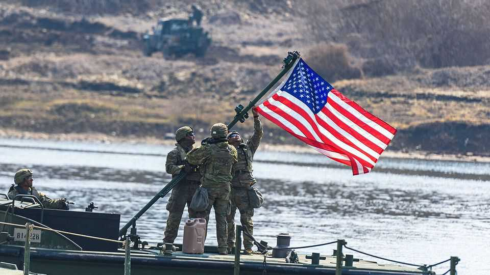

Donald Trump abruptly scales back an exercise with South Korea
In doing so, he has further undermined trust in America’s alliances

Aug 20th 2026
ULCHI FREEDOM SHIELD, an annual military exercise, brings thousands of American and South Korean troops together to train to counter threats from North Korea. This summer’s edition began on August 17th, and the allies planned to focus on responding to new capabilities that North Korean soldiers acquired while fighting in Russia’s war against Ukraine, such as drone warfare. But the night before the exercises were due to start, President Donald Trump ordered his Department of War to “substantially reduce” (by six days) the manoeuvres, citing the cost of the drills, South Korea’s refusal to support his war in Iran and his “very good relationship with Kim Jong Un”, North Korea’s dictator.
Mr Trump presumably hopes to entice Mr Kim to restart the diplomatic engagement the two men began during his first term in office. He may also want to press South Korea into accelerating its promised investments into America. And he doubtless hopes to distract attention from his Iranian quagmire.
But his abrupt decision sends worrying messages to both friends and foes across Asia. The prospect of more talks between the leaders, however unlikely, causes anxiety in the capitals of American allies. (North Korea called Mr Trump’s move an empty gesture, though Mr Trump insisted on August 19th that he would be meeting Mr Kim later this year.) Japan, in particular, worries that Mr Trump could cut a bad deal that undermines its security. The move heightens fears of American abandonment that have been growing since his return to office. Adversaries may conclude that America’s commitments to its allies are hollow.
This is not the first time Mr Trump has used exercises with South Korea as a bargaining chip. When he met Mr Kim in Singapore in 2018, the first summit between American and North Korean leaders, Mr Trump said that America would halt upcoming drills with South Korea. The move stunned his own advisers. But the unilateral concession did not bring about a breakthrough; a subsequent meeting between the two men, in Hanoi the following year, collapsed in acrimony.
South Korea’s president, Lee Jae Myung, shares Mr Trump’s desire to revive engagement with the North. On August 19th-20th his government hosted China’s foreign minister, Wang Yi, in Seoul, in part to discuss ongoing efforts to reach out to Mr Kim. Yet Mr Lee also acknowledges the importance of maintaining deterrence, which Mr Trump has weakened.
Mr Trump has long been sceptical of the value of America’s alliance with South Korea. During his first term he sought to withdraw American troops from the country, but was stymied by Congress. Since returning to office, his administration has made quiet but consequential changes to the alliance. America has, for example, moved to reorient the mission of its 28,500 troops in South Korea away from their traditional focus on the peninsula and towards deterring China. He has also used tariffs to extract a pledge from South Korea to invest $350bn in America. Mr Trump has not hesitated to link the future of the security alliance to the flow of investment deals. His decision to curtail the exercises came as South Korea’s industry minister was visiting Washington to discuss the stalled implementation of those plans.
Even before the latest announcement, Mr Trump’s transactional approach to the alliance had undermined trust in America. Polling by the East Asia Institute, a think-tank in Seoul, found the share of South Koreans who trust America plunged from 85% in 2022 to 46% this year. Fear of abandonment has also fuelled discussions about South Korea acquiring nuclear weapons. Mr Lee has said he opposes that course. But he has sought to develop the capacity to enrich and reprocess nuclear fuel for the civilian nuclear-power industry, which would make building the bomb easier if South Korea ever deemed it necessary. Following Mr Trump’s announcement, he reiterated his intention to move forward with those plans.
Similar dynamics are at work across the region. Perceptions of American reliability have fallen steeply between 2022 and 2026 in Australia, Japan and Singapore, according to the Pew Research Centre. Japan has also sought to beef up its own defences; the drive for greater autonomy is shaping revisions to its national security strategy expected later this year.
Yet in the face of threats from a richer and increasingly assertive China and a nuclear-armed North Korea, American allies in Asia find it hard to imagine their security without America. Despite the falling level of trust, more than 60% of South Koreans still see the alliance with America as the best way to ensure their security. Such results, writes Sohn Yul, the president of the East Asia Institute, reflect a “contradictory situation where [South Korea] does not trust the United States yet has no choice but to rely on it.” The dilemma is shared across Asia. ■
For exclusive coverage of Asian politics, economics and security, sign up to Asia Bulletin, our weekly subscriber-only newsletter.